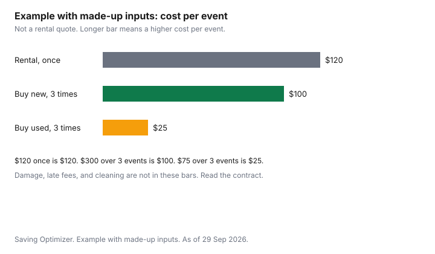

Clothing · Canada
Wedding and Formal Outfits on a Budget in Canada: Renting, Thrifting and Re-Wearing
For a wedding or formal event in Canada, renting is cheaper only when you will wear the outfit once and the damage, late and cleaning terms still leave it under a purchase you would reuse. Second-hand formalwear works if it fits, and re-wearing wins when you change one thing. A wedding invitation is often a one-day clothing bill. Renting, buying new, buying used, borrowing, and re-wearing an outfit you already own are five different costs, and only some of them show up on the first receipt. This page compares the drivers. It does not rank rental companies, and it does not name a dress or a suit. The per-wear formula is the cost-per-wear guide. If the outfit has to be saved for, the sinking-fund method is the sinking-fund guide, which is about irregular bills in general, not about weddings alone.
Key takeaways
- Renting is cheaper only when one wearing is the plan and the damage, late, and cleaning terms still leave it under a purchase you would wear again.
- This guide does not cite a rental fee, a damage deposit, or a late fee. Those numbers are on the rental company's own page. See that page.
- Second-hand formalwear is a fit problem first. Shoulders on a jacket, and a hem you can change, matter more than the original boutique.
- Re-wearing is a cost-per-event win when you change one thing: a layer, a hem, or the accessories, and you still like the garment.
- Pay for small alterations on a piece that already fits the hard parts. This page does not cite a tailor's price.
Rental services and their true cost
A rental quote that shows one number is not the cost. Add every line the contract can charge.
The base rental. A cleaning fee if it is extra. Shipping or a pick-up window if you are not near the shop. A damage or loss amount, and who decides a scuff counts. A late fee if the return misses the time, and whether that fee is a day or the replacement price. Insurance the contract adds unless you decline it. This guide does not cite a dollar for any of those lines. No Canadian formalwear rental page is used here as a price. See the company you are about to book, and keep the terms with the confirmation. This page does not rank services.
Then compare that total with one wearing. If you will not wear the outfit again, the rental total is the cost per event. If you might wear it again, the rental is competing with a purchase divided by those later events, not with the purchase price alone. Borrowing from a friend is a third path. The cost is often zero dollars and a real favour. Return it clean, on the day you promised, and do not alter a borrowed garment.
Suit rental vs buying
A suit is the formal piece most likely to have a second and third wearing: another wedding, a funeral, a hearing, a dinner. Renting can still win for a date when the size is unusual for you, the style is narrower than anything you would wear again, or you do not have the cash for a purchase you have not saved. Buying wins when the suit fits, the cloth is something you will keep, and you can name two future events without inventing them. The office-wardrobe guide is the in-between case, where a jacket does Monday and a wedding with a different shirt.
Do not rent a suit and also buy shirts, shoes, and alterations that you could have put toward a suit you keep. List those extras on both sides of the comparison. A rental that requires a specific shirt you cannot reuse is less attractive than the headline fee. Again, the fee itself is not on this page. See the rental terms.
Thrift and consignment formal wear
Second-hand formalwear is common, and the failure mode is fit. Jacket shoulders and the rise of trousers are hard to change.
A hem, a taken-in waist, and a replaced button are the alterations that usually make sense. The Value Village guide covers that chain's terms. Other thrift and consignment shops post their own. This guide does not cite a consignment split or a hold period. See the shop. If the piece is final sale, the fitting room is the whole return policy.
Off-price new clothes are a different aisle. Compare-at tags on a dress are not a wedding discount until they survive the ordinary-price test. That scepticism is the Winners and Marshalls guide and the outlet guide. After the event, if you will not wear it again, selling it is the resale guide. A resale fee comes off the cost-per-event figure. Do not assume you will get the ticket back.
| Option | Cost drivers | Alterations and returns | After the day |
|---|---|---|---|
| Rent | Base fee, cleaning, shipping, damage, late return. See the contract | Usually the shop's own fit. Damage terms decide a stain | You give it back. Nothing to store |
| Buy new | Ticket, tax, alterations you choose | Store return window if it is not final sale. See the retailer | Re-wear, or resell and subtract the fee |
| Buy used | Ticket plus any hem or waist work | Often limited. Try it on. See the shop | Same as buying new, from a lower start |
| Borrow | Cleaning you agreed to. No alteration of someone else's clothes | None, unless the owner asks | Return it on time, in the condition you promised |
| Re-wear, with a change | Accessories or a small hem. The garment is already paid for | Only if you want the change to be permanent | The event did not add a new garment |
Re-wear strategies
Re-wearing is the lowest cost per event because the purchase is already sunk. The invitation does not require a stranger's outfit.
Change the layer, the shoes, or the jewellery, and wear the dress or the suit again. A hem that you can pin for one night and restore is different from a cut you cannot undo. Dye is a one-way door. Follow the care label, and accept that a dye job can ruin a resale. If you want the option to sell, keep the piece close to the condition you bought it in. The resale guide is where fees live.
Set the money aside before the invitation arrives if your year usually includes two or three of these days. A sinking fund is a monthly amount for a bill that is not monthly. The method, built for property tax and insurance and usable for a wedding season, is the sinking-fund guide. Do not put the outfit on a card because the event is social.
| Made-up path | What you pay | Events | Cost per event |
|---|---|---|---|
| Rental, one night | $120 | 1 | $120 |
| New purchase, worn three times | $300 | 3 | $100 |
| Used purchase, worn three times | $75 | 3 | $25 |
Tailoring small fixes
Worth paying for: a hem on trousers or a dress that otherwise fits, a waist taken in when the rest of the trouser is right, a strap shortened, a button replaced. Not worth paying for, as a rule of fit rather than a price: new shoulders on a jacket, a bodice that gaps or binds, a size change large enough that the pockets and the balance move. Ask the tailor what they will not promise. If the answer is vague, do not leave the garment.
The Competition Bureau's textile page, date modified 2022-01-19 and checked 29 Sep 2026, says that for custom-made items such as suits, fibre content and dealer identity may be on the invoice or bill of sale instead of on the garment, as long as properly labelled samples or swatches are there to examine before you buy. Read that invoice before you leave the shop. A custom suit with no fibre line and no swatch is a gap, not a luxury. This page does not cite a making fee or a rush charge. See the shop. No service is ranked.

Sources & date stamps
- No Canadian formalwear rental fee, damage charge, or late fee is cited. See the rental company's own terms before you reserve. Checked 29 Sep 2026 as a limit of this page, not as a price.
- Competition Bureau, Labelling textile requirements in a nutshell, date modified 2022-01-19, checked 29 Sep 2026. Custom-made suits may carry fibre content on the invoice when samples are available to examine.
- The cost-per-event table is an example with made-up inputs. It is not a survey of rental shops or of thrift tickets.
Frequently asked questions
Is renting a formal outfit cheaper than buying?
It is cheaper when you will wear the outfit once and the rental's full bill is under a purchase divided by the times you will wear it. The full bill includes the base rental, damage or loss terms, a late fee if you miss the return, cleaning, and shipping if those apply. This guide does not cite those amounts. See the rental page. A suit you will wear to other events can cost less per event to buy, even when the first receipt is higher. The second table is an example with made-up inputs.
What do rental services charge for damage or late returns?
Whatever that company's current terms say. This guide does not cite a damage deposit, a stain fee, or a late-day charge, because no Canadian rental contract was used as a price source. Read the terms before you reserve, including who decides that a mark is damage, and whether a late return bills another day or the whole garment. Photograph the outfit when you pick it up and when you bring it back.
Can I buy formalwear second-hand?
Yes. Thrift and consignment are ordinary sources for suits and dresses, if you can try the piece on or you trust the measurements and the return rule. A jacket that does not fit the shoulders is a poor buy, because that is the expensive alteration. Value Village's terms are on the thrift guide. Selling a piece after the event is the resale guide. This page does not cite a consignment commission. See the shop.
How do I re-wear an outfit without it looking the same?
Change one visible thing and keep the garment you already paid for. A different layer, a hem you can live with for a second event, different shoes, or a simpler set of accessories is enough for most daytime and evening invitations. Do not recut a dress you might want to return. Follow the care label if you are tempted to dye it. Re-wearing is the point of the cost-per-event math.
What alterations are worth paying for?
A hem, a waist taken in on trousers that otherwise fit, and a loose button or strap. They are worth it when the hard fit is already right: jacket shoulders, or the bodice of a dress. They are not worth it when the quote approaches the price of a piece that fits. This page does not cite a tailor's fee. For a custom order, fibre content may be on the invoice. Read it.
Researched and drafted with AI assistance and fact-checked against official Canadian sources. How we create content.